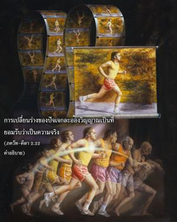
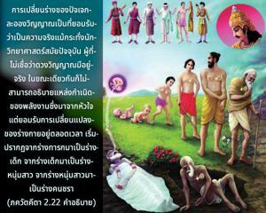
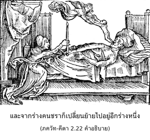
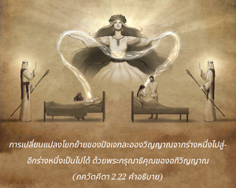
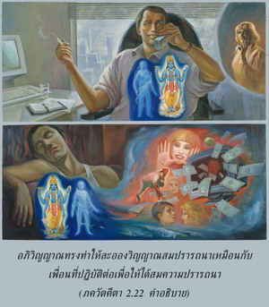

ดังเช่นบุคคลใส่เสื้อผ้าชุดใหม่ ได้ยกเลิกหรือทิ้งชุดเก่าไป ในลักษณะเดียวกัน ดวงวิญญาณก็รับเอาร่างวัตถุใหม่มา และยกเลิกร่างเก่าที่ใช้ประโยชน์ไม่ได้





การเปลี่ยนร่างของปัจเจกละอองวิญญาณเป็นที่ยอมรับว่าเป็นความจริง แม้กระทั่งนักวิทยาศาสตร์สมัยปัจจุบันผู้ที่ไม่เชื่อว่าดวงวิญญาณมีอยู่จริง ในขณะเดียวกันก็ไม่สามารถอธิบายแหล่งกำเนิดของพลังงานซึ่งมาจากหัวใจ แต่ยอมรับการเปลี่ยนแปลงของร่างกายอยู่ตลอดเวลา เริ่มปรากฏจากร่างทารกมาเป็นร่างเด็ก จากนั้นมาเป็นร่างหนุ่มสาว จากร่างหนุ่มสาวมาเป็นร่างคนชรา และจากร่างคนชราก็เปลี่ยนย้ายไปอยู่อีกร่างหนึ่ง ดังที่ได้อธิบายไว้แล้วในโศลกก่อนหน้านี้ (2.13)
การเปลี่ยนแปลงโยกย้ายของปัจเจกละอองวิญญาณจากร่างหนึ่งไปสู่อีกร่างหนึ่งเป็นเรื่องที่เป็นไปได้โดยพระกรุณาธิคุณของอภิวิญญาณ อภิวิญญาณสนองความปรารถนาให้กับละอองวิญญาณ เหมือนกับเพื่อนคนหนึ่งที่ทำให้เพื่อนอีกคนหนึ่งได้รับความสมปรารถนา คัมภีร์พระเวท เช่น มุณฺฑก อุปนิษทฺ รวมทั้ง เศฺวตาศฺวตร อุปนิษทฺ ได้เปรียบเทียบอนุวิญญาณและอภิวิญญาณ เสมือนเพื่อนนกสองตัวที่เกาะอยู่บนต้นไม้ต้นเดียวกัน นกตัวหนึ่ง (ปัจเจกวิญญาณ) กำลังกินผลไม้ของต้น และนกอีกตัวหนึ่ง (องค์กฺฤษฺณ) ทรงเพียงแต่ทอดพระเนตรไปที่สหายของพระองค์เท่านั้น ถึงแม้ว่านกทั้งสองตัวนี้จะมีคุณสมบัติเช่นเดียวกัน แต่ตัวหนึ่งจะถูกยั่วยวนด้วยผลของต้นไม้วัตถุ ในขณะที่อีกตัวหนึ่งเพียงแต่เป็นพยานในกิจกรรมของเพื่อนนกเท่านั้น องค์กฺฤษฺณคือ นกพยาน และอรฺชุน คือ นกที่กินผล ถึงแม้ว่าทั้งคู่จะเป็นเพื่อนกัน แต่นกตัวหนึ่งคงสถานภาพความเป็นนายและอีกตัวหนึ่งเป็นบ่าว การลืมความสัมพันธ์ของละอองวิญญาณเช่นนี้เป็นเหตุให้เราต้องเปลี่ยนตำแหน่งจากต้นไม้ต้นหนึ่งไปสู่ต้นไม้อีกต้นหนึ่ง หรือเปลี่ยนจากร่างหนึ่งไปสู่อีกร่างหนึ่ง ดวงวิญญาณ ชีว ดิ้นรนต่อสู้ด้วยความยากลำบากบนต้นไม้แห่งร่างวัตถุ แต่ทันทีที่เขายอมรับนกอีกตัวหนึ่งว่าเป็นพระอาจารย์ทิพย์สูงสุด เหมือนกับที่อรฺชุน ทรงอาสาที่จะศิโรราบเพื่อปฏิบัติตามคำสั่งสอนขององค์กฺฤษฺณ ด้วยความสมัครใจ นกบ่าวตัวนี้ก็จะมีอิสรภาพจากความโศกเศร้าทั้งมวลทันที ทั้ง มุณฺฑก อุปนิษทฺ (3.1.2) และ เศฺวตาศฺวตร อุปนิษทฺ (4.7) ได้ยืนยันไว้ดังต่อไปนี้
สมาเน วฺฤกฺเษ ปุรุโษ นิมคฺโน
’นีศยา โศจติ มุหฺยมานห์
ชุษฺฏํ ยทา ปศฺยตฺยฺ อนฺยมฺ อีศมฺ
อสฺย มหิมานมฺ อิติ วีต-โศกห์
“ถึงแม้ว่านกสองตัวจะอยู่บนต้นไม้ต้นเดียวกัน นกที่กินผลจะจดจ่อหมกมุ่นอยู่กับความวิตกกังวล และเศร้าสลดในฐานะเป็นผู้มีความสุขจากผลของต้นไม้ หากเป็นไปได้ที่เขาจะหันมาหาเพื่อนผู้ทรงเป็นองค์ภควานฺ และทราบถึงพระบารมีของพระองค์ นกที่ได้รับความทุกข์ทรมานอยู่นี้ก็จะมีอิสรภาพจากความวิตกกังวลทั้งปวงทันที” ถึงบัดนี้ อรฺชุน ทรงหันพระพักตร์เข้าหาพระสหายนิรันดรองค์กฺฤษฺณ และเข้าใจ ภควัท-คีตา จากพระองค์ และจากการสดับฟังจากองค์กฺฤษฺณเช่นนี้ อรฺชุน จึงทรงสามารถที่จะเข้าใจถึงพระบารมีอันสูงส่งของพระองค์ และมีอิสรภาพจากความเศร้าโศกทั้งปวงได้
องค์ภควานฺทรงแนะนำ อรฺชุน ณ ที่นี้ไว้ว่าอย่าได้โศกเศร้าต่อการที่พระอัยกาและพระอาจารย์จะมีการเปลี่ยนร่าง อรฺชุน ทรงควรยินดีกับการสังหารร่างกายของพวกท่านในการต่อสู้เพื่อคุณธรรม เพื่อที่ท่านเหล่านี้จะได้ชำระล้างผลแห่งกรรมจากกรรมของร่างกายในอดีตทั้งปวง ผู้ที่ได้สังเวยชีวิตบนแท่นบูชา หรือในสมรภูมิที่เหมาะสมเป็นผู้ชำระล้างผลกรรมของร่างกายได้ในทันที และเลื่อนขึ้นไปมีคุณภาพชีวิตที่สูงกว่า ฉะนั้น จึงไม่มีเหตุผลที่ อรฺชุน จะทรงต้องเศร้าโศกเสียใจแต่อย่างใด